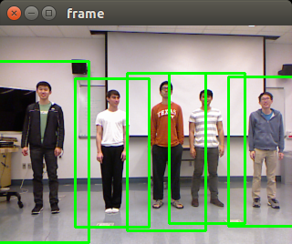
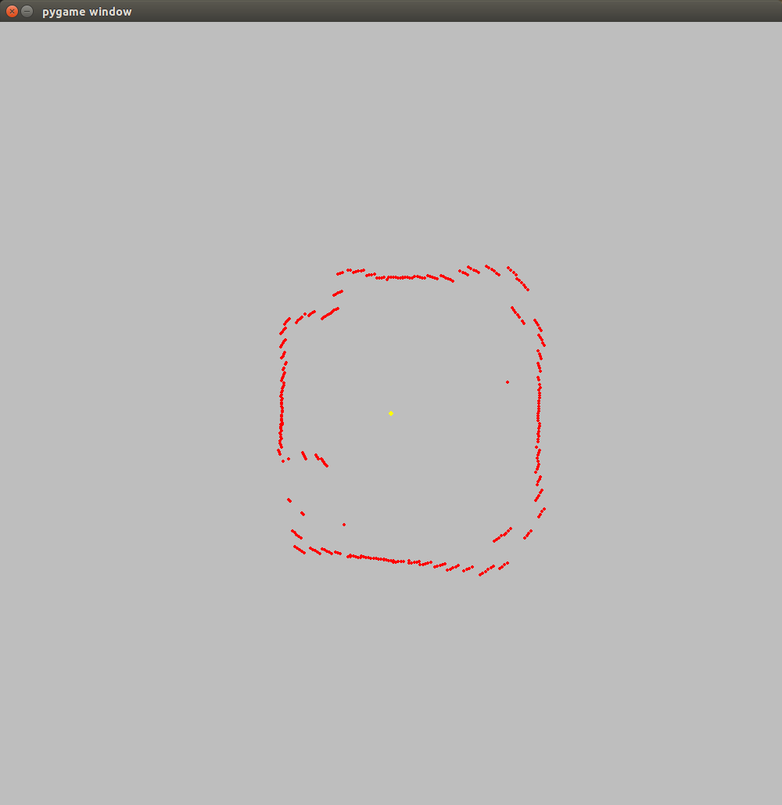
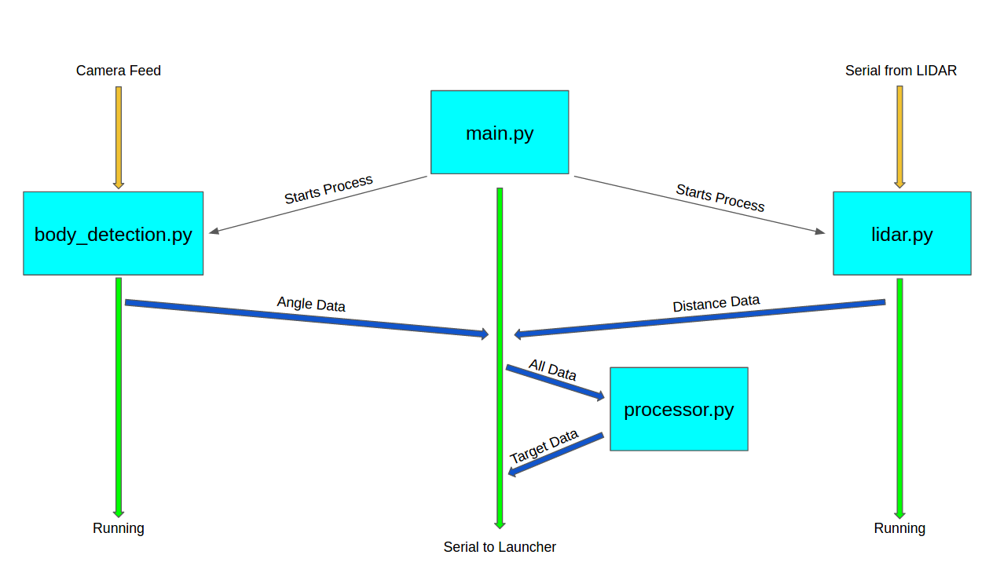

Software
Our software codebase consists mainly of four modules - Body Detection, LIDAR, Processor, and the Main. These modules work together to combine various data streams into a cohesive decision that can be sent to the launcher. Together, they make up Frost’s brain. The dependencies of our software are OpenCV, Numpy, Freenect, and Serial.
View our software code here
Body Detection Module - Frost's Eyes
The Body Detection Module handles data from the Xbox Kinect camera. It uses the Freenect library to connect to the Kinect and begin receiving data as individual frames. Machine learning classifiers in OpenCV then take each received image frame and scan the image to determine if there are any human bodies within the frame. It then computes rectangles to bound any found bodies. The rectangles then go through a precision algorithm to remove false positives and excessive positives (too many rectangles found around the same target). The processed rectangles are then drawn on the frame, which is displayed to the user. Due to possible hardware error, a history mechanism was implemented to accommodate for any dropped frames that miss the tracked target by accident. The history mechanism uses the most recently actually drawn rectangles to smooth the video feed, and the history depletes itself over time if nothing is actually found so that rectangles aren’t calculated for when people aren’t in the camera’s field of view. This processed data is also sent to the Main Module for additional processing with the decision making algorithms.
LIDAR Module - Frost's Depth Perception
The LIDAR module handles data from the LIDAR. It uses a serial connection to interface with the Arduino attached to the LIDAR. First it receives a protocol from the Arduino to sync the two systems and signify the LIDAR is in the 0 position and will begin a new rotation. It then begins receiving data from the Arduino as hexadecimal numbers. The numbers represent a package consisting of angle and distance. After receiving the package, an algorithm will convert the hexadecimal numbers into base 10 integers and send the data over to the Main Module as it receives it. Once the sync protocol is received again, the module will be notified that it’s starting a new rotation, and will begin converting data once again starting from the origin.
Processor Module - Frost's Cognitive Thinking
The Processor module contains all the algorithms and computation that processes the incoming data streams from the two modules above. This module is a helper module that is actually called by the Main Module and provides a nice encapsulation for our entire processing unit. There are three main processing classes: SerialOut, LidarView, and TargetLocator.
SerialOut contains the functions needed to push data from the Main Module out to the Arduino attached to the launcher. The SerialOut class’s main function uses a complex decision tree based on timings and conditions that sends specific information at various times. For instance, angle is sent much more often than other data so that the launcher can constantly orient itself to face the target while they move around. Distance is sent less frequently to allow time for the launcher to re-arm.
LidarView creates a visualization for the data received from the LIDAR and also computes the distance to the target based on a combination of computations from both the TargetLocator class and this class. Each datapoint from the LIDAR is cumulatively drawn onto a 2D projection of the surroundings, and then the combined computation from the classes is used to identify what is what in the projection. The distance data is then sent back to the Main Module to be used when the SerialOut class is called.
TargetLocator finds the location of the target using mathematical algorithms in combination with computations from the LIDARView class. The TargetLocator class calculates location based on its own data and then references data from the LIDARView to refine its own calculation. The location data is then also sent back to the Main Module to be used when the SerialOut class is called.
Main Module - Frost's Brain
The Main Module is the main script that is run for Frost, and acts as Frost’s brain. This module receives data from the Body Detection and LIDAR modules, which are then sent off to the Processor module to their respective classes for processing. The processed data will be returned to the Main Module and then sent out to the launcher’s Arduino through the SerialOut class. The Main Module thus performs the role of the system’s center, where all sensor data is received and where all decisions are made and sent to actuate motors.
Integration - MultiProcessing
Multiprocessing brings all the different modules together. A challenge encountered during development was that if all the code ran in the same script, then the output was extremely slow and staggered. This was because the Kinect, the LIDAR, and the algorithms were all waiting for each other to finish an iteration, so all of them lagged behind real time and were not in sync. The multiprocessing library is a mechanism that allows for different processes to be run simultaneously, thus allowing for the two data streams and the decision making algorithms to all run in real time. The additional advantage of multiprocessing is that each process is put on its own processor, thus giving more computational power to each process. The Main Module, the Body Detection Module, and the LIDAR Module now all run on different processes, and data is communicated between the different processes using queues. In this manner, we integrated our different modules and tuned them to optimize their speed and performance. Each module can run at their most accurate form without fear of lagging the other modules or reducing the overall speed of the system.
